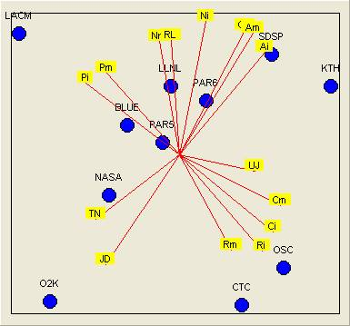

The Visual Co-Plot Homepage
Algorithm: Adi Raveh, Program: David Talby
Visual Co-Plot implements the Co-Plot statistical data analysis technique in a simple and intuitive user interface. The current version is 5.5. To use the program, download it, unzip it and run the 'setup' program.
The Co-Plot method has several unique advantages for data analysis:
- It is extremely well fit for data with many variables and few observations, in contrast to all regression based techniques.
- It can be used to deduce on relations between observations (clusters), relations between variables, and relations between variables and observations - all from the same plot.
- It can be used even when the variables are correlated - in fact, one of its goals is to detect such "variable clusters" and the relationships between them.

Visual Co-Plot was designed to make the use of the method particularly simple and attractive:
- Data insertion is simple into growable tables. There is no need to define the number or size of fields, or supply all data in advance. It is also possible to work on several data sets at once.
- It is easy to add or remove variables and observations from the analysis, and produce several graphical outputs from different parts of the same data. This enables very fast robustness tests.
- It is possible to assign names to both variables and observations, as well as several other formatting options of the graphic output. The output can then be copied into another program, printed, or transformed into a textual display for further analysis.
- Copy & paste of data from and to Excel is supported.
- Several editing features for the visual Co-Plot output are supported, including titles and footers, hiding parts of the output, coloring observations by category, and zoom in / zoom out.
- Batch mode enables activating the analysis at once on a large set of input files from the command line.
- Output can be exported in several formats, including text, a bitmap picture, and Matlab-readable files.
The program and its source code (included with the download) is copyright of David Talby and Adi Raveh. It is freely available under this license. Please acknowledge the original writers in papers resulting from its use.